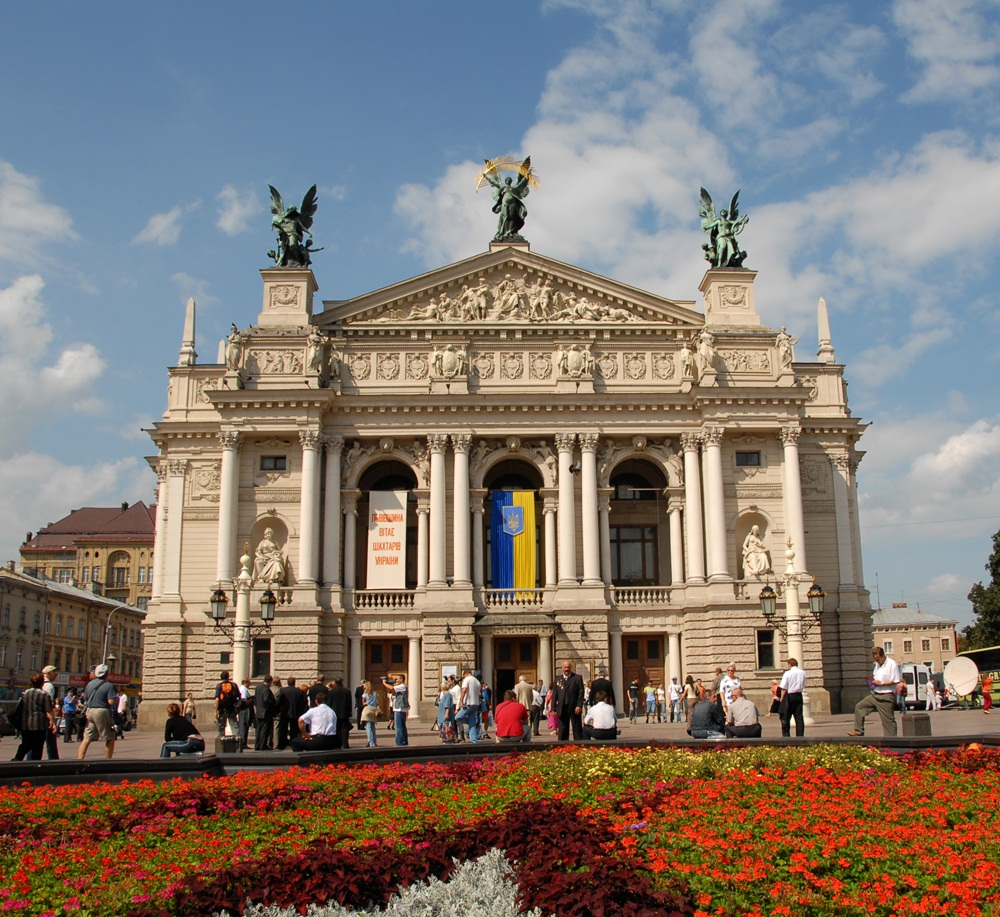
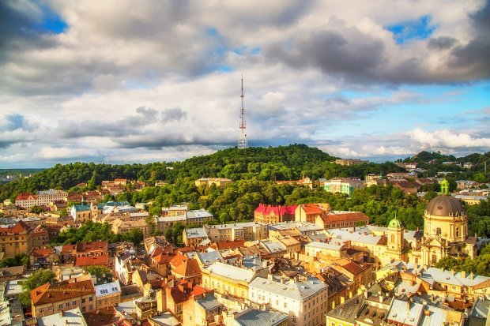

Львів та його три незабутніх місця
ТОП - 1. Площа Ринок!
Площа Ринок – центр політичного, громадського, культурного і торгового життя міста протягом 500 років, серце Львова, історичний початок європеїзації України. Львівська Площа Ринок зберегла свою назву від ХІV століття. Вона походить від німецького «der Ring» (коло, кільце), власне за таким принципом будувалися центральні площі німецьких середньовічних міст. Саме тут, у долині ріки Полтви в середині ХІV століття німецькі колоністи за дорученням короля Казимира ІІІ започаткували класичне європейське місто з класичною ринковою площею. Польський король зводив місто за найдосконалішими тогочасними будівельними технологіями, він запросив для цієї мети ремісників та будівельників з Німеччини. У наступні століття архітектурну досконалість Ринку доповнювали італійські та австрійські архітектори.
ТОП - 2. Оперний театр!
Львівський Оперний театр – архітектурна перлина Львова у стилі неоренесансу (1901 рік), один з найгарніших театрів Європи. Збудований на початку минулого століття за проектом архітектора Зиґмунта Ґорґолевського Великий театр у Львові порівнювали з Паризькою та Віденською оперою. Стоячи перед величним фасадом цієї фантастичної споруди відчуваєш всепоглинаючу потугу мистецтва, його вічність у контрасті зі швидкоплинністю людського життя. Це споруда, у якій можна знайти різні архітектурні стилі європейських країн, втілені з пишномовною імпозантністю. Форми фасаду дуже складні і різноманітні: це колони, балюстради, ніші, насичені алегоричними скульптурними постатями. Над головним карнизом фасаду височать статуї восьми муз, над ними горельєфна десятифігурна композиція «Радощі і страждання життя». Фронтон угорі завершується скульптурною тріадою крилатих бронзових постатей Генія драми і комедії, трагедії і у центрі – Слави, яка тримає золоту пальмову гілку. Ці скульптури творили видатні львівські митці Попель, Баронч, Війтович.
ТОП - 3. Високий замок!
Бути у Львові і не піднятися на Високий замок – це як у Києві не побачити Хрещатик. Це найвища точка міста Лева, висота гори – 413 метрів. Колись на ній височів замок. Забудовувати гору почали ще у 13 столітті. Коли замок розбудували і його стало добре помітно з навколишніх територій, то гору почали називати Замковою, або "Високим замком". У 17 столітті через Львів пройшли шведські війська, які штурмували твердиню. Відтоді замок почав руйнуватися. І, на жаль, століття за століттям до його збереження ніхто не докладався. Камінням з гори мостили вулиці Львова, розбирали оборонні споруди, щоб будувати у місті кам’яниці. Нині із замкових укріплень залишилася невеличка стіна. А Замкова гора стала одним із найулюбленіших оглядових майданчиків для львів’ян та гостей міста. І це не дивно, адже вид з гори – дійсно неймовірний.
